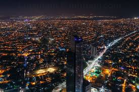

Karachi is Pakistan’s largest metropolitan city and the true economic backbone of the nation. It is a place where millions of individuals arrive with dreams of success, stability, and growth. The city reflects determination and resilience, where every road, market, and neighborhood carries stories of struggle, effort, and achievement built through years of hard work.
Located along the Arabian Sea, Karachi presents a rare contrast between natural beauty and intense urban life. Calm sea breezes coexist with crowded streets, while peaceful mornings slowly transform into energetic nights. This constant movement creates a powerful rhythm that defines Karachi as a city that never truly rests.
Karachi is a melting pot of cultures, languages, and traditions where people from all regions live together. Despite its challenges, the city continues to grow through unity and diversity. Karachiites adapt quickly, stand strong during difficult times, and move forward with confidence and courage.
More than just buildings and infrastructure, Karachi is an experience that shapes personality and mindset. Living in this city teaches patience, resilience, independence, and ambition. It pushes people to think creatively, act decisively, and dream without limits, turning Karachi into a lifestyle rather than just a location.
Every sound, every movement, and every wave touching the shore represents the heartbeat of Karachi. The city breathes ambition, creativity, and survival. It never sleeps because millions of dreams are constantly in motion, transforming effort into opportunity and challenges into strength with unstoppable energy.